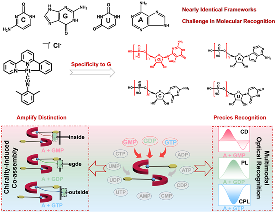
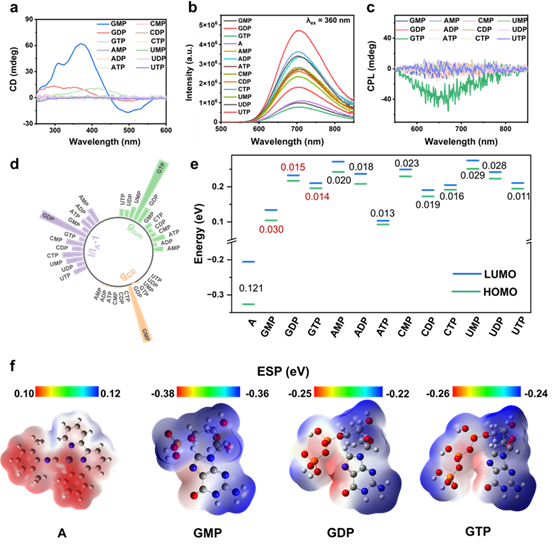
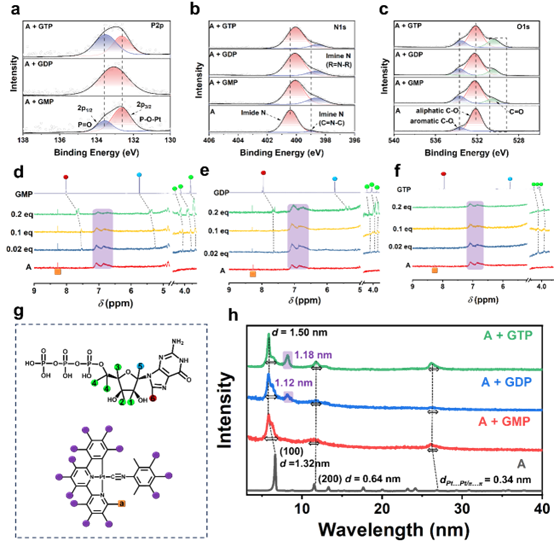
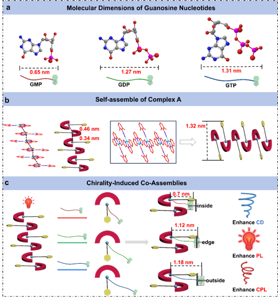
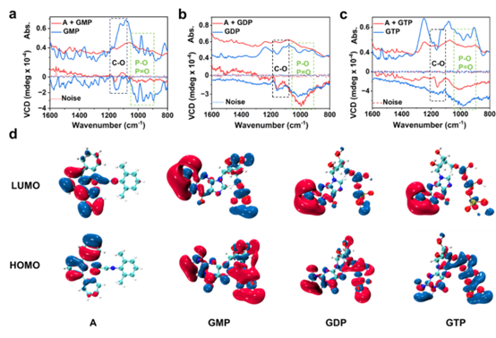

由于结构仅有细微差别的核苷酸在分子识别领域中极具挑战性，如何放大这些微弱差异成为实现高选择性识别的关键。本工作以三种含有磷酸根不同数量的鸟嘌呤核苷酸：GMP、GDP、GTP与Pt配合物（A）的手性共组装过程，将原本难以区分的微小结构差距“放大”为显著的手性光学差异，从而实现有效、显著的分子识别。研究系统揭示了磷酸根数量如何精确调控核糖手性中心与Pt(II)的空间距离并主导组装构型：GMP实现最强的基态手性诱导与增强CD，GDP通过缩短Pt-Pt之间距离提升PL效率，而GTP则因高度不对称的堆积而呈现显著CPL响应。最终，通过CD–PL–CPL三通道光学输出实现了对GMP、GDP、GTP的特异性识别，为解决磷酸根数目的核苷酸识别难题提供了新的手性放大策略，也为多通道光学传感与可控手性材料设计提供了重要思路。
我们通过有机Pt配合物A与三种鸟嘌呤核苷酸（GMP、GDP、GTP）共组装实现对三种分子的多通道光学响应，CD光谱显示GMP可显著增强基态手性诱导，PL光谱揭示GDP的组装能有效提升组装体的发光效率，而CPL光谱显示GTP形成的组装体具有更强的圆偏振发光。DFT计算进一步表明，配合物A与鸟苷核苷酸间的HOMO–LUMO能级匹配以及电荷互补性提供了高效的电子耦合与选择性结合基础，解释了实验中观察到的鸟苷核苷酸特异性光学响应。
通过XPS光谱测试观察到P 2p、N 1s和O 1s结合能在组装前后发生明显变化，表明核苷酸参与配位或氢键作用。¹H NMR滴定实验结果进一步揭示了GMP、GDP、GTP与配合物A的局部相互作用及化学位移变化，提示不同磷酸化程度的核苷酸对配合物的微环境的差异化影响。PXRD图谱显示三种核苷酸形成的共组装体具有各自特征的晶体或有序结构，反映了不同核苷酸驱动下的超分子构型差异。
通过Bondi原子半径计算得到的分子尺寸可进一步证明三种组装体的结构差异。配合物A可自发形成自组装结构，而与核苷酸共组装时，不同核苷酸引导形成不同的堆积模式：GMP促使核糖单元嵌入内部，实现显著CD增强；GDP形成边缘关联插入，提升PL效率；GTP则将手性单元置于层外，显著增强CPL信号。该示意图说明了核苷酸微小结构差异如何通过手性放大效应调控超分子堆积及多通道光学响应。
最后通过VCD及分子轨道分析揭示组装体的手性差异。红外吸收光谱显示与C–O和P–O/P=O伸缩振动相关的特征峰，而对应的VCD光谱揭示这些振动区域中手性信号的增强，指明核苷酸与配合物A相互作用中手性源的具体贡献。通过HOMO和LUMO前沿轨道电子云分布进一步分析，不同组分的电子密度及波函数分布显示了分子间相互作用的电子特性，为理解手性诱导组装及选择性识别机制提供了微观电子结构依据。
本工作提出了一种基于磷酸数目引导的手性识别策略，GMP、GDP和GTP通过与有Pt配合物A形成不同的组装构型，实现多通道光学区分：GMP全嵌入近距离手性诱导产生最强CD，GDP部分嵌入限制旋转提升磷光，而GTP空间分离组装增强激发态手性产生最强CPL信号。研究将分子尺度的电子相互作用与超分子组织直接关联，建立了结构依赖的识别机制，为可调光学功能的磷酸敏感手性材料设计提供了新思路
转载文章请注明出处：国家纳米科学中心段鹏飞老师课题组 https://duanpengfei-chirality.com/